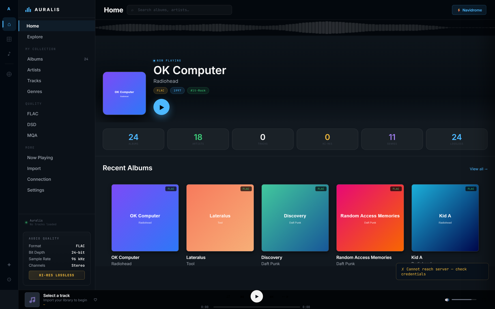
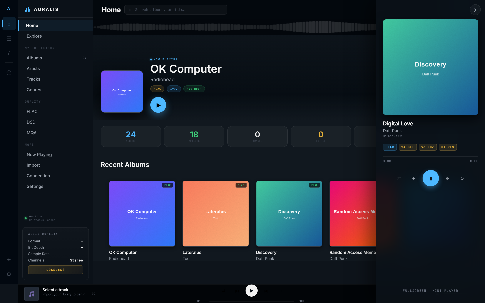
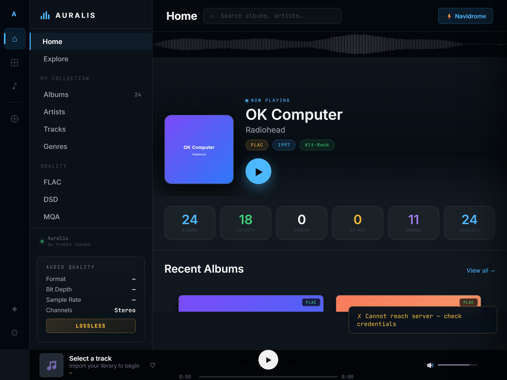
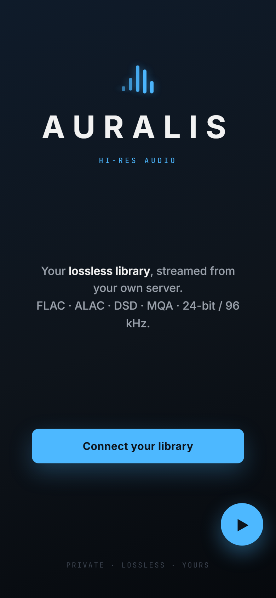

Stream FLAC, ALAC, DSD, MQA, 24-bit / 96 kHz bit-perfect from a Navidrome server you control. No Spotify, no Tidal subscription. Just the audio you already own, anywhere you happen to be.
Modern streaming services treat hi-res as an upsell. Auralis treats it as the baseline. Every byte stays under your control — the app is just the glue between your NAS and your phone.
Your library lives on your QNAP, Synology, or any Linux box running Navidrome. No cloud database, no telemetry.
Vercel proxy + Cloudflare quick-tunnel ships traffic to your NAS without port-forwarding or DNS work.
Add to home screen on iOS, Android, or desktop. Service-worker caching makes the app shell offline-capable.
The Subsonic /stream endpoint passes native format through. No transcoding unless you ask for it.
Real 32-band FFT visualiser via AudioContext. Not a decorative animation — actual frequency analysis.
Made-for-you shelves driven by your listening history. No API calls, no telemetry, learning happens in your browser.
Release date, label, country, catalog number, type — pulled from MusicBrainz with two-layer cache. Cover Art Archive fallback.
Right-docked Now Playing panel for desktop, floating mini-player overlay, mobile bottom-sheet variant. Pick your workflow.
Fully fluid clamp()-based typography. Desktop, tablet, phone, ultra-wide — the layout reflows to the viewport.
Auralis is format-transparent — whatever Navidrome's `stream` endpoint hands us, we play. Hi-res is treated as the default, not the exception.
Clean typography, generous spacing, cover-forward layouts. Soundwave at the top, persistent audio-quality panel in the sidebar, right-docked Now Playing on desktop, native mobile views on phone.




The whole app is a single HTML file with inline CSS and inline JavaScript. No build step, no bundler, no React. The simplest thing that could possibly work.
Point Auralis at your Navidrome server and start playing.
▶ Launch Auralis